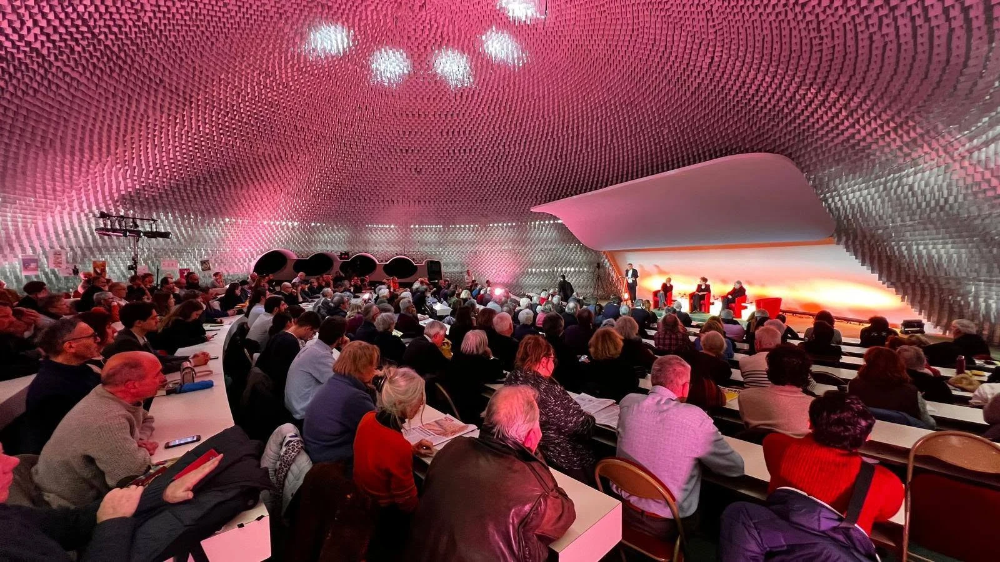
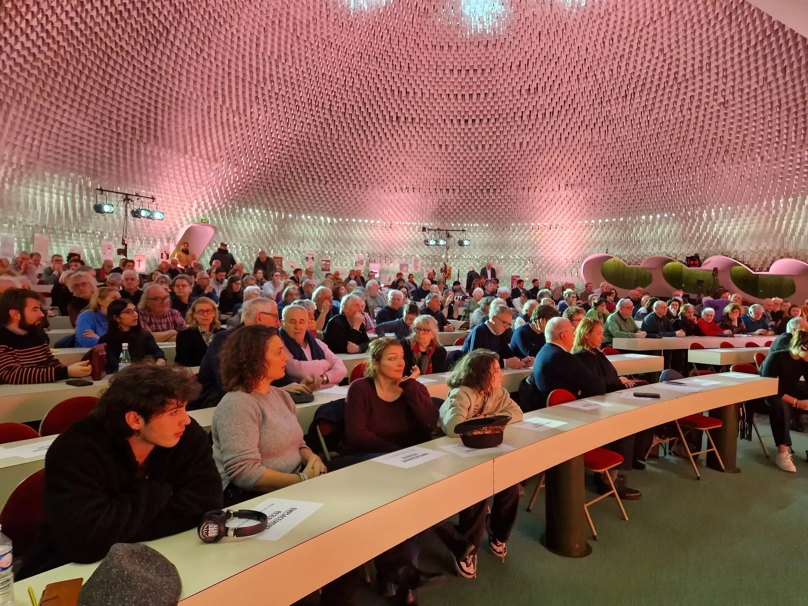
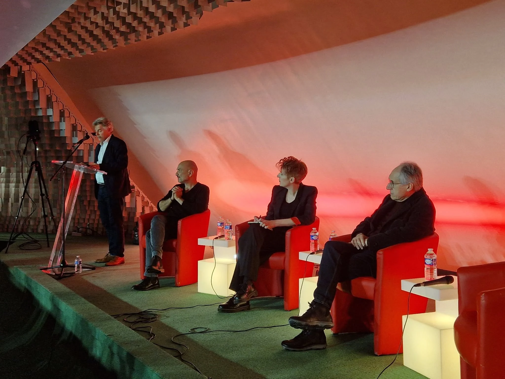

Reportage relayé
Dix ans après les attentats de janvier 2015, une soirée d’hommage en images
Date de mise à jour indiquée par Facebook · 9 janvier 2025
Repères éditoriaux
Nous avons relayé le retour en images de la soirée d’hommage à l’invitation du PCF. La publication conserve l’intervention signée de Fabien Roussel et trois photographies de la soirée.
Texte de la publication · PCF national
10 ans déjà...
Merci à toutes et à tous d'avoir répondu présents ce soir, à cette invitation du PCF et de participer pour la 4ème année à ce temps d’hommage consacré aux victimes de la barbarie qui s’est abattue le 7 janvier 2015 sur la rédaction de Charlie Hebdo.
Merci tout spécialement aux intervenants qui nous font, cette année encore, l’honneur de leur présence et la chaleur de leur amitié ; et qui nous permettent de placer cette soirée sous le signe de la fraternité, de la Raison humaine et de l’engagement.
Merci donc à Gérard Biard, rédacteur en chef de Charlie Hebdo ; merci à Richard Malka, avocat de longue date de Charlie et avocat de la famille de Dominique Bernard et merci, à Natacha Polony, journaliste et essayiste, dont la voix et la plume sont si précieuses au débat public.
Merci enfin à Julie Gayet et à Christian Rauth qui prêteront leur voix d’acteur à la puissance des mots et des textes tellement « Charlie » d’Elsa Cayat et de Charb qui nous invitent, chacune et chacun à leur manière, à penser le monde avec cohérence, avec intransigeance, avec intelligence et surtout à ne rien céder… surtout – surtout - face à la connerie et aux cons dangereux qui en font profession.
Dix ans se sont écoulés déjà depuis ce 7 janvier fatidique où 12 femmes et hommes, journalistes, dessinateurs, policiers, techniciens ont perdu la vie, victimes des frères Kouachi, victimes du terrorisme islamiste et de l’obscurantisme, coupables d’avoir brandi l’étendard de la Liberté, coupables d’avoir défendu l’irrévérence, le droit à la caricature ; coupables – enfin - d’avoir entretenu – par l’humour - la flamme de l’esprit critique.
A leur suite, ce sont cinq nouveaux meurtres, antisémites et anti-républicain, qui frapperont à Montrouge et porte de Vincennes. Ils endeuilleront, à leur tour, la France entière. C’est enfin, plus récemment, le décès de Simon Fieschi le 19 octobre 2024, dernière victime de l’épopée sanglante des frères Kouachi dont la voix, le récit, le combat pour la vie vont terriblement nous manquer.
Après cet abominable mois de janvier 2015, la France aura connu le Bataclan, Magnanville, Nice, l'assassinat d’Arnaud Beltrame, de Samuel Paty et de Dominique Bernard et tant d’autres attaques, tant d’autres attentats déjoués aussi.
La République à chaque fois est frappée en son coeur, à l’endroit même où battent ses valeurs les plus fondamentales, à l’endroit même où s’expriment avec la force la plus grande, l’exercice des libertés fondamentales qu’elle s’attache à garantir et qui donnent chair et vie à notre existence collective, nous rassemblent et font de nous ce peuple insupportable à toutes les oppressions ; ce peuple qui depuis plus de deux siècles, réclame avec insolence pour tous les hommes, au-delà de ses frontières, le droit à l’égalité et la fraternité.
Nombre d’entre nous ont perdu ce 7 janvier 2015, un parent, un mari, un fils, une fille, un ami, un camarade, des compagnons de lutte et je sais que les années ne suffisent malheureusement pas à effacer la douleur ou à combler les absences. La peine, les souvenirs resteront gravés en chacune et chacun de nous.
Mais la mémoire collective est un jardin où le temps, l’oubli et le flot des atrocités qui s’amoncellent chaque jour, effacent peu à peu si l’on n’y prend pas garde, l’histoire des tragédies humaines.
L’attentat djihadiste contre la rédaction de Charlie Hebdo n’est pas seulement une tragédie humaine.
Ces meurtres sont un acte politique, fruit d’une idéologie obscurantiste, en lutte contre la conscience et la dignité humaines.
A ce titre, ces crimes barbares nous concernent toutes et tous, car ils touchent au socle partagé de la cohésion sur laquelle nous avons choisi de bâtir notre destin commun, ils touchent à l’universalité d’un combat destiné à ne jamais finir, de libertés à toujours protéger.
30 ans après les tragédies de Saint-Michel, de Maison-Blanche, de Port-Royal, de Villeurbanne et la campagne de terreur menée sur notre sol par le GIA, le PCF continue de combattre sans relâche l’islam politique sous toutes ses formes.
Hier, aux côtés des militants progressistes algériens menacés de mort dans leur pays plongé dans la guerre civile ;
aujourd’hui, avec vous, pour ne rien céder face aux attaques qui se multiplient contre la laïcité qu’elles viennent de gauche ou de droite.
C'est pour cela que le PCF souhaite inscrire cette date du 7 janvier au coeur de l’histoire et de l’agenda républicains.
C’est pour cela que nous continuerons à commémorer, comme nous le faisons ce soir, le souvenir de celles et ceux qui, pour avoir exercé leurs libertés fondamentales, pour avoir voulu donner vie à leurs vocations, pour avoir fait l’expérience de leur humanité sont tombés sans l’avoir choisi, en notre nom à tous.
Fabien Roussel.



Sources
PCF national · publication relayée par le PCF 79 · bibliothèque Facebook · AR-0002-FB-01209
À lire aussi · 7 janvier 2015. Le PCF rend hommage aux victimes de l’attentat contre Charlie Hebdo